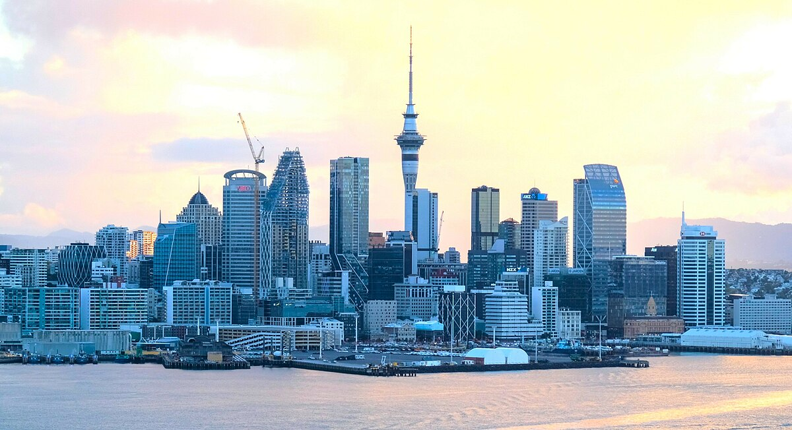

New Zealand, or Aotearoa in the Māori language, is a stunning island nation located in the southwestern Pacific Ocean. It comprises two main islands, the North Island (Te Ika-a-Māui) and the South Island (Te Waipounamu), along with numerous smaller islands. Known for its breathtaking landscapes, New Zealand boasts majestic mountains, pristine beaches, lush forests, and unique geothermal activity, making it a paradise for nature lovers and adventure seekers alike.
New Zealand is famous for its rich Māori heritage, which is deeply interwoven with its culture and traditions. A significant part of this heritage is the Treaty of Waitangi, signed on February 6, 1840, between Māori chiefs and representatives of the British Crown. Often referred to as the nation's founding document, the treaty granted British sovereignty over New Zealand while promising to protect Māori rights to their lands, resources, and cultural practices. However, differences in the English and Māori translations led to conflicting interpretations, particularly regarding governance and sovereignty, causing disputes and grievances over time. Despite these challenges, the treaty remains a cornerstone of New Zealand’s identity and continues to shape its legal and political systems. Today, it is commemorated annually on Waitangi Day, reflecting both the struggles and progress of honoring the treaty’s principles and fostering reconciliation with Māori communities.

The country is a global leader in sustainability and is renowned for its commitment to protecting its natural environment. New Zealand's economy thrives on agriculture, tourism, and film production, with its landscapes being featured in iconic movies like The Lord of the Rings and The Hobbit trilogies. With a population of around 5 million, New Zealanders, or "Kiwis," are known for their friendly and laid-back attitude. Its cities, like Auckland, Wellington (the capital), and Christchurch, are vibrant hubs of innovation, education, and culture
Whether you're drawn to exploring its dramatic fjords, experiencing Māori traditions, or enjoying the dynamic city life, New Zealand offers an unparalleled blend of natural beauty and cultural richness.